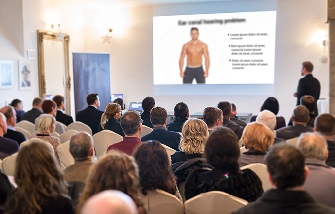
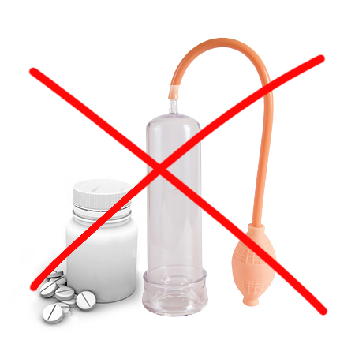

szybszy czas reakcji na bodźce seksualne, poprawa kondycji wzwodu
Koniec ery pompek do penisa i niebieskich pigułek! Przełomowa kuracja polskiego profesora pozwala naturalnie osiągnąć pełną erekcję w 4 sekundy
Czy nowa metoda usuwająca problemy z erekcją zniszczy rynek pompek i chemicznych środków na wzwód? Wybitni specjaliści ds. seksuologii nie mają wątpliwości, że tak. Wraz z opracowaniem przez Polaka naturalnej formuły makro-molekularnej, nastąpił długo wyczekiwany przełom w walce o stałą gotowość na seks.
Już ponad 14 tys. użytkowników kuracji osiąga pełną erekcję w zaledwie 4 sekundy. U 98% z nich wzwód utrzymuje się około 45 minut (tolerancja +/- 3 min.), a poziom libido wzrósł o 83%. Takie efekty osiągają nawet ci mężczyźni, którzy od dawna nie byli w stanie odbyć stosunku seksualnego z powodu braku erekcji. Jak to możliwe?
Prof. Paweł Halicki (ekspert ds. biologii molekularnej) postanowił wykorzystać postęp medycyny i raz na zawsze uwolnić mężczyzn od wstydu oraz kompleksów związanych z brakiem gotowości penisa do akcji. To był początek rewolucji w dziedzinie seksuologii. Profesor, po 11 miesiącach badań laboratoryjnych, opracował naturalną, bezpieczną i łatwą w stosowaniu formułę pozwalającą osiągnąć natychmiastową erekcję w odpowiedzi na bodziec seksualny – jak w przypadku zdrowego, podnieconego 20-latka.
Profesjonalne pisma medyczne już okrzyknęły tę kurację „pionierskim osiągnięciem w seksuologii”, a profesor za swoje osiągnięcia otrzymał nominację do licznych nagród. Dzięki działaniu jego formuły, nawet mężczyźni, którzy od lat borykali się z problemami z potencją, dziś kipią energią i są gotowi na seks w kilka sekund. Tym samym uwolnili się od potrzeby używania pompek oraz chemicznych pigułek, które trzeba zażywać tuż przed stosunkiem.
„Pompki i chemiczne środki na potencję to pieniądze wyrzucone w błoto!” Jakie są powody, by tak przypuszczać?
Te słowa potwierdza już ponad 14 tys. zadowolonych użytkowników makro-molekularnej formuły przywracającej pełną sprawność seksualną, którzy już wyrzucili swoje pompki i chemiczne pigułki do kosza. Dlatego postanowiliśmy wziąć pod lupę te popularne rozwiązania. A dokładniej sprawdzić, jakie są ich wady oraz z czym na co dzień muszą się zmagać mężczyźni, którzy z nich korzystają. Oto wnioski:
-
Pompki są drogie i nieskuteczne
Profesjonalne pompki do penisa to koszt od 540 do 800 zł i nie jest to jednorazowy wydatek. Ponieważ tego rodzaju urządzenia trzeba używać przed każdym stosunkiem, oznacza to częstą konieczność wymiany zużytych lub popsutych części i niejednokrotnie generuje większe koszty, niż nowe urządzenie! Nawet, jeśli kogoś stać, by lekką ręką wydać takie pieniądze, to z reguły metody te rozwiązują problem tylko na kilka minut. Potem penis wraca do poprzedniej, słabej kondycji.
-
Powodują wstyd i dyskomfort
Aby skorzystać z pompki, trzeba użyć jej tuż przed stosunkiem, a następnie zsunąć znajdujący się na pompce pierścień i założyć u nasady penisa, by krew nagle nie odpłynęła z prącia. Tylko z tym pierścieniem można odbyć stosunek. Mężczyźni, którzy decydują się na pompki, najczęściej bardzo tego żałują. Jest im wstyd, gdy kobieta patrzy na ich członka z politowaniem i pyta: „Co to takiego masz na penisie?”.
-
Chemiczne pigułki są niezdrowe
Pigułki na wzwód niesamowicie obciążają wątrobę i zaburzają zdolność koncentracji. Specjaliści ostrzegają, że tego typu rozwiązania są sposobem na wyciąganie pieniędzy od mężczyzn w desperacji, którzy oczekują szybkiego efektu. Fakty są jednak takie, że aby zwiększyć ochotę na seks i osiągnąć pełną dyspozycyjność do stosunku na stałe, a w dodatku w sposób bezpieczny dla zdrowia, musisz wybrać rozwiązanie działające w zgodzie z naturą.
-
Stosowanie ich wiąże się z dużym ryzykiem
Co gorsza używanie pompki może skończyć się uszkodzeniem naczyń krwionośnych, pojawieniem się bolesnych wzwodów, problemami z wytryskiem czy brakiem czucia w obrębie żołędzi. Jeśli stosujesz do tego niesprawdzone preparaty, to możesz doprowadzić nawet do czasowej lub, w niektórych wypadkach nieodwracalnej, impotencji!
-
Odbierają całą przyjemność z seksu
Te sposoby stymulacji wzwodu są niewygodne i całkowicie pozbawiają przyjemności z seksu. Kontakt z kobietą zmienia się ze spontanicznej intymności w godziny przygotowań. Pompki, obręcze, pigułki i… ciągły strach, czy się uda? Czy to w ogóle naturalne? Czy bez tego byłbym jeszcze mężczyzną?
To okropne uczucie – pełne wstydu i zażenowania. Żaden mężczyzna nie chce go doświadczać. Co gorsza, jeśli mężczyzna zdecyduje się na pompkę, musi liczyć na cierpliwość i zrozumienie ze strony partnerki. Spojrzeć jej w oczy, ukrywając zdenerwowanie i zmieszanie. Praktycznie pozbawia się szans na grę wstępną. Z przyjemności robi się przykry, pełen wstydu obowiązek.
Właśnie dlatego kuracja makro-molekularna prof. Halickiego to prawdziwy przełom w walce o prawidłową potencję seksualną i intensywne doznania, które zbliżają do siebie partnerów – pełna kuracja trwa tylko 28 dni!
Pompki i chemiczne pigułki sztucznie i nietrwale wpływają na erekcję. Natomiast hydrożelowa kuracja prof. Halickiego rozszerza ciała jamiste i daje im zdolność maksymalnego ukrwienia w reakcji na bodziec seksualny (np. zmysłowy pocałunek czy widok rozbierającej się partnerki). Zawarte w kuracji składniki mają silne właściwości stymulujące. Codzienne stosowanie tych substancji przez 28 dni sprawia, że mężczyźni zyskują aż o 83% więcej wigoru seksualnego, a ich członek jest zawsze gotowy do akcji.
Pełną, trwającą aż 45 minut erekcję może osiągnąć teraz każdy mężczyzna
Kuracja dostępna jest już w sprzedaży detalicznej pod nazwą BigLover. Formuła ma postać lekkiego hydrożelu intymnego. Jego stosowanie jest możliwe tuż przed stosunkiem – wówczas potęguje również doznania partnerki. Żel nie uszkadza prezerwatyw, a ponadto jest w pełni bezpieczny dla organizmu, czego dowiodły dodatkowe badania niemieckiego ośrodka badawczego we Frankfurcie. Badania te wykazały, że kuracja ma ponad 98% skuteczności. Dzięki niej mężczyźni w wieku 27-89 lat w zaledwie 28 dni odnieśli spektakularne efekty, wydłużając czas erekcji średnio o 72,9%. Bez względu na wiek i stopień sprawności seksualnej przed kuracją.
U mężczyzn biorących udział w badaniu, natychmiast po zastosowaniu formuły, odblokowany został pełny potencjał ciał jamistych, a do członka zaczęły napływać większe ilości krwi. W efekcie znacznie poprawiła się kondycja wzwodu. W kolejnych dniach zwiększyło się także libido. Ale to nie wszystko. Po 28 dniach kuracji uczestniczący w badaniach mężczyźni jednogłośnie przyznali, że seks jest intensywniejszy, a oni są w stanie dać swoim partnerkom nawet 5 orgazmów podczas 1 stosunku.
Udokumentowane efekty kuracji mówią same za siebie:
wzrost libido i większa przyjemność z seksu
wydłużenie czasu trwania stosunku
brak problemów z erekcją: każdorazowo pełny wzwód i gotowość do stosunku w sytuacji intymnej
1. tydzień
2. tydzień
3. tydzień
4. tydzień
1. tydzień – uzupełnienie niedoborów metabolitów i oczyszczenie naczyń krwionośnych prącia z toksyn – poprawa kondycji wzwodu
2. tydzień – 83% wzrost libido i wzrost testosteronu do 9 nanogramów – większa przyjemność z seksu
3. tydzień – wydłużenie aktu seksualnego do około 45 minut (tolerancja +/- 3 min.)
4. tydzień – pełny wzwód osiągany w odpowiedzi na bodziec seksualny w zaledwie 4 sekundy
Pan M.S. (37 lat) jest jednym z pierwszych mężczyzn w Polsce, którzy zastosowali BigLover:
„Pracowałem w międzynarodowej korporacji na dość wysokim stanowisku. Każdego dnia towarzyszył mi spory stres, ale odnosiłem duże sukcesy i jeszcze kilka lat temu wydawało mi się, że lepiej być nie może! Aż do pewnej randki z uroczą koleżanką z działu sprzedaży… Podobała mi się od dawna, ja jej też, więc jak już w końcu się spotkaliśmy u mnie, to trudno się dziwić, że szybko przenieśliśmy się do sypialni. A tam jakaś masakra… Mój penis za nic w świecie nie chciał stanąć. Koleżanka bardzo próbowała mi pomóc, wykazała się też dużą wyrozumiałością, kiedy ostatecznie do niczego między nami nie doszło. Nie zmienia to jednak faktu, że nigdy w życiu nie czułem się bardziej upokorzony.
Wmawiałem sobie, że to jednorazowy kryzys. Nie uprawiałem wtedy w sumie seksu od jakichś 3 miesięcy. Totalnie pochłonął mnie jeden projekt realizowany w Chinach i nie miałem nawet głowy, by myśleć o kobietach. Dlatego po tamtym fiasku postanowiłem spotkać się z tą koleżanką raz jeszcze i udowodnić – jej i sobie – że wszystko ze mną w porządku. Niestety, skończyło się tak jak poprzednio, a ja miałem ochotę palnąć sobie w łeb… Nie byłem w stanie wytrzymać jej spojrzenia, kiedy potem mijaliśmy się w pracy na korytarzu. Może to moja paranoja, ale byłem pewien, że inne dziewczyny w firmie też zaczęły na mnie zerkać z politowaniem… Rzuciłem wtedy pracę z dnia na dzień, ale nie mogłem zmobilizować się, by znaleźć kolejną. Żyłem z oszczędności. A przy okazji kupowałem różne środki na erekcję i próbowałem rozwiązać swój problem. Mówiłem sobie: może to jest dobry czas, by się odstresować i potem z nową siłą wrócić do gry: i tej zawodowej, i tej łóżkowej. Wypróbowałem kilka rodzajów tabletek na potencję, ale równie dobrze mógłbym spłukać je w toalecie – efekt byłby ten sam, czyli żaden. Po większości z nich nie mogłem w dodatku prowadzić auta (po jednych szczególnie mieniło mi się w oczach, jakbym miał gorączkę). Byłem załamany: zupełnie straciłem ochotę na seks, w kontaktach z kobietami zrobiłem się niesamowicie nerwowy, a do tego kończyły mi się pieniądze i musiałem wziąć słabą pracę, której nigdy wcześniej nawet bym nie rozważał.
W porę dowiedziałem się jednak o kuracji BigLover. Teraz wiem, że gdybym nie skorzystał z tej kuracji – popełniłbym błąd życia. Stres kompletnie uniemożliwiał mi normalne życie seksualne, a wystarczyły 4 tygodnie, by wszystko nie tylko wróciło do normy, ale przyniosło mi zupełnie nowe doznania w łóżku! Pierwszy raz mam tak, że kobiety, z którymi sypiam, osiągają wielokrotne orgazmy i wracają do mnie po więcej! Pewność siebie, jaką zyskałem, jest nie do opisania – dzięki niej udało mi się przy okazji zmienić pracę na jeszcze lepszą, niż w mojej poprzedniej korporacji. Wielkie dzięki!”
Po co katować się kompleksami i wydawać fortunę na nieskuteczne środki na potencję, skoro można naturalnie i oszczędnie osiągać pełen wzwód w 4 sekundy, a dzięki długotrwałej erekcji fundować sobie i partnerce zmysłową gamę przyjemności?
Skuteczność BigLover została dowiedziona ponad wszelką wątpliwość przez niemiecki ośrodek badawczy we Frankfurcie. Prof. Halicki nieustannie zbiera nominacje do nagród za odkrycie badawcze.
Dobra wiadomość jest taka, że można otrzymać BigLover za udział w klubie rabatowym z dofinansowaniem 50% taniej. Dofinansowanie przysługuje tylko 200 pierwszym osobom, które wyślą swoje zgłoszenie. Specjalna oferta obowiązuje do końca . Kurację można otrzymać wyłącznie za pośrednictwem poniższej strony.

Komentarze
Czytaj komentarze do artykułu „Koniec ery pompek do penisa!"
Tomasz
a mowi się że polacy nie odnosza sukcesow na skale swiatowa. wspaniałe osiągnięcie. Brawa dla naszego rodaka
bartek
ja skorzystalem z tego preparatu , dostalem za udzial w klubie rabatowym to kosztowało tak mało pieniedzy, a w koncu moge normalnie uprawiac seks! czuje się jak nowy. polecam
Marcin
coś tu mi nie gra. Dlaczego akurat ruwne 28 i juz zawsze będzie mi stawal na zawolanie? to brzmi jak klamstwa
do pana fujary
@Marcin Zawsze jak jakiś instytut badawczy przeprowadza testy kliniczne jakiejś substancji, wyniki podaje w ramach czasowych. Takie są wytyczne badawcze. Średni wynik grupy testowej był widocznie 28 dni!!! to spektakularny efekt. Poza tym pisze się równy, a nie ruwny...
janko
Wypowiem się, ponieważ męczyłem się z pompkami przez prawie 6 miesięcy. Wydalem na nie w sumie 8 tys. zł, co i tak nie jest dużo, chociaz jak na pensje magazyniera to sami rozumiecie. I dreczyly mnie tylko te pompki,trzeba było zakladac, zaciskac pierscien, zdejmowac, uważać na to. Pamiętac o zdjęciu pierscienia, bo penis uschnie. kobiety bały się mnie. A trzy tygodnie temu zamowilem ten preparat i w cholerę te pompki wyrzucilem. Teraz staje zawsze,szybko i prosto jak zolnież!! nie wiem czy to na kazdego dziala, na mnie zadzialalo!warto, abyście sprobowali
Andrzej
również już zastosowałem BigLover i świetnie na tym skorzystałem. Używam dopiero od dwóch tygodni, ale już widzęróżnicę w temopie osiagania erekcji. Członek stoi też długo, tyle ile potrzeba, bez zadnych akcji, ze nagle już nie moge. Bez pomek i innych ustrojstw normalnie mogę uprawiać seks. Wreszcie zyje jak normalny facet
marian
Wchodzac na te strone nie spodziewalem się ze takie cuda wyczytam. Muszę mieć tą kurację w takim razie. Mam już dość stresu przed każdym seksem
kierowca tira
Mam ma już swoje lata, więc mam pytanie do państwa co stosowali, ile macie lat, czy są tu jacyś faceci 55+, którzy to stosowali? Chcę wiedzieć czy jest dla mnie jakaś szansa. Mam dość łapania babek stojących przy szosie. A do normalnych kobiet boje się zagadać. Proszę o odpowiedz
Damian
@kierowco tira też miałem problem ze swoim siurkiem. Załatwiłem to tym preperatem. już po trzzech tygodniach staje aż miło. Przestałem się bać, że laski mnie wyśmieją. Więc polecam też BigLover tobie
kierowca tira
@Damian dziękuję Ci bardzo za odpowiedź. w takim razie zamawiam sobie tę kuracje
Garu
również stosowałem, penis jest od razu chętny do zabawy, a jak długo stoi!:) pozdrawiam i polecam (się)
edek
najcetniej od razu bym skorzystał,ale mam obawy, czy to na pewno działa. Wydałem już wystarczojąco na nieskuteczne sposoby
miś
a!! właśnie przeczytalem ze na tę kuracje przysluguje gwarancja potrojnej satysfakcji, w takim razie nie ma obaw. Przekonam się na wlasnej skorze,oby mi pomogło.
Antoni
jestem w miarę młody (36 lat) i na erekcje nie narzekam,ale przez stres w robocie często miałem tak, ze nie miałem ochoty na seks. Dziewczyna śmiała się ze mnie, ze to ona powinna się wykrecac bolem glowy, a nie ja :P Dlatego używam BigLover. To jedyny środek na erekcje, ktory rzeczywiście dziala, noa do tego dobrze robi tez dziewczynie :) Także korzyści 2 w 1 :P
feliks
właśnie czekam na przesyłkę z kuracją, niedługo napiszę o efektach